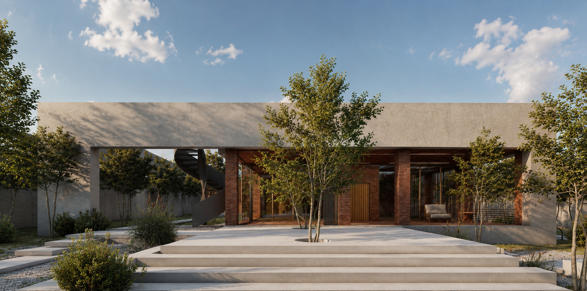
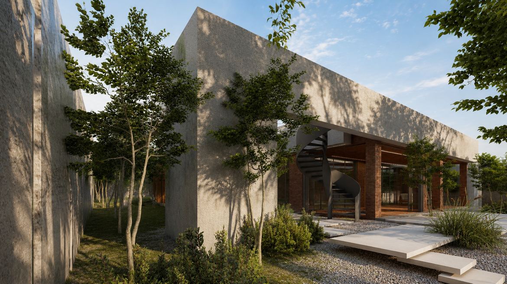
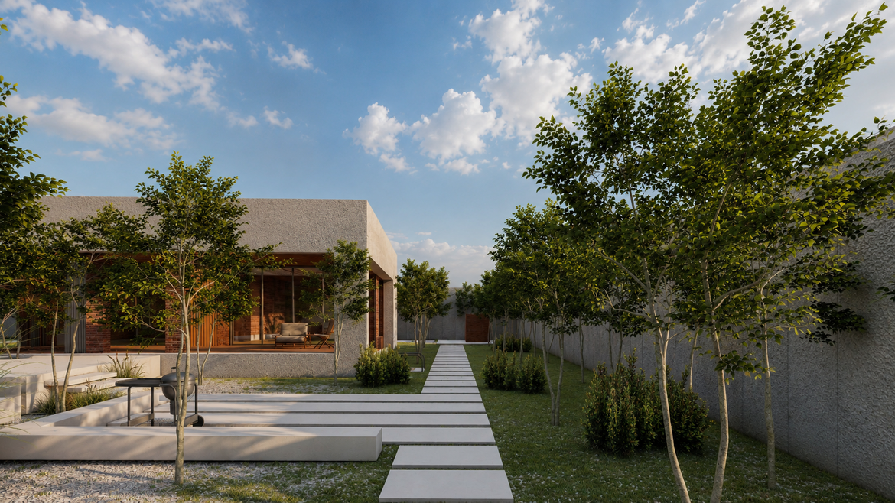
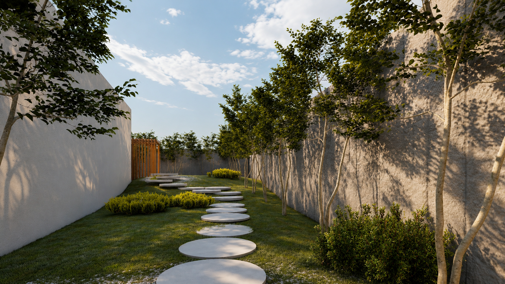
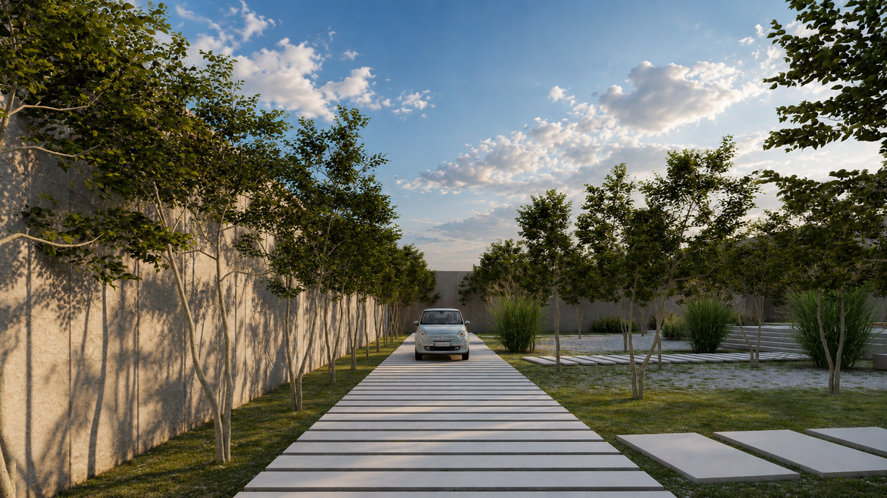

Residential Architecture

Location
Year
Scope
Located in Khanzenian, Villa 4614 was designed as a contemporary weekend retreat that captures the spirit of Shiraz while responding to the client's desire for a modern and comfortable home. The project balances clean architectural forms with spatial qualities inspired by the city's rich cultural heritage, creating a place for relaxation, gathering, and escape from everyday life. Rather than replicating traditional architecture, the design reinterprets the defining characteristics of Shiraz in a contemporary language. The villa embraces the city's reputation for hospitality through a sequence of welcoming spaces that encourage social interaction and a strong connection between indoor and outdoor living. Warm, earthy materials and a carefully considered palette create an inviting atmosphere, while intimate corners and sheltered seating areas offer moments of privacy and reflection. The spatial arrangement is designed to support the rhythm of weekend living. Open communal spaces become the heart of the house, encouraging family gatherings and shared experiences, while quieter areas provide comfort and retreat. Natural light, framed views, and carefully proportioned openings reinforce the sense of warmth and tranquility that defines the project. Villa 4614 is a contemporary interpretation of Shiraz's architectural identity—an environment where modern living is enriched by the city's enduring values of hospitality, comfort, and human-centered design.



